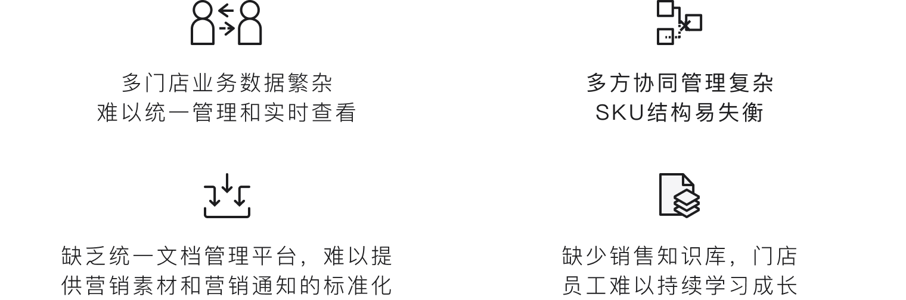
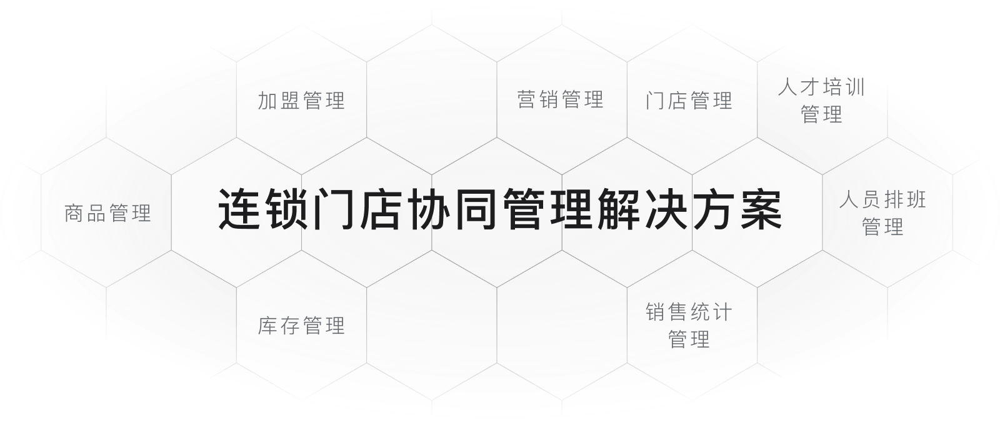

石墨办公提供的「新零售连锁门店协同管理解决方案」，为连锁企业打通多链路数据闭环，实现门店、营销、人才培训等一体化管理。
Challenges
零售连锁企业面临的挑战
在门店经营、商品协同、人才培训和总部管理并行推进的过程中，零售连锁企业需要一个统一的平台来承接跨地域、跨部门、多角色的协作需求。
多门店协同
总部、区域、门店之间的信息同步滞后，执行进度难以追踪。
多角色协作
采购、运营、营销、培训等多部门协同链路长，过程容易断档。
多系统分散
经营数据、知识资料和业务流程缺少统一沉淀，难以复用与管理。

挑战聚焦
从业务数据、供应链协同到知识沉淀，零售连锁企业常常被“流程多、角色多、系统散”所拖慢，导致管理动作难以标准化复制。

方案总览
围绕商品管理、门店管理、营销管理、培训管理和销售统计，搭建一套可协同、可追踪、可沉淀的连锁门店管理底座。
01
门店数据协同
跨地域、跨部门多人协同，业务数据实时管理
通过统一在线表格、门店填报模板和经营看板，让一线数据可以被快速收集、自动汇总并实时回传总部，提升业务判断和动作反馈效率。
适用于：门店日报 / 巡检记录 / 销售周报
核心能力：数据收集、自动汇总、实时看板
核心价值
- 摆脱繁琐手工帐，实现精细电脑账
- 自动生成数据看板，周/月报表
- 扫码一键高效搜集数据，实现全员无纸化办公
让区域经理、店长与总部运营在同一份经营数据上协作，减少信息回传延迟和重复录入。
02
供应链与销售管理
商品、采购、供应商多方协同，助力门店的销售管理
围绕商品生命周期建立统一协同台账，把采购、库存、供应商和售后反馈放在同一套表格体系中，让每个环节都有据可依。
适用于：SKU 管理 / 采购对账 / 售后追踪
核心能力：权限分级、模板化协作、明细追溯
核心价值
- 支持不同角色查看权限，敏感数据安全可控
- 自动化模板助力实时优化 SKU 管理
- 共享表格清晰记录多方合作细节
把多方协作从“线下反复确认”变成“线上透明留痕”，帮助门店更快响应商品和售后变化。
03
总部经营管理
企业全局管理看板，活动进展实时同步
面向总部管理层、区域负责人和活动执行团队，统一沉淀任务排期、活动推进与经营指标，用可视化视角串联日常管理动作。
适用于：营销活动 / 项目排期 / 经营复盘
核心能力：任务推进、里程碑跟踪、全局展示
核心价值
- 营销活动看板，查看具体活动状态和进展
- 企业任务看板，共管业务一体化
- 全局管理看板，管理层及时查看真实生产经营情况
用一套可追踪的执行看板替代碎片化汇报，让总部掌握关键动作的推进状态和异常节点。
04
知识沉淀与培训
企业知识统一归档，实践经验自由流动
把门店 SOP、培训资料、活动复盘和经营经验集中沉淀到统一空间中，让新店复制、员工培养和经验传承都更加高效。
适用于：SOP 归档 / 培训资料 / 门店知识库
核心能力：云端存储、权限管理、组织共享
核心价值
- 云端编写，自动归档，知识分享门槛大大降低
- 完备的权限管理机制，易于管理知识传播范围
- 集中存储的云盘空间，方便存放分享企业资料
把优秀门店经验从个人记忆沉淀为组织资产，帮助连锁企业复制方法、统一标准、降低培训成本。
Retail Solution
让连锁门店数据、流程和知识在同一套协作系统里流转起来
从门店经营、商品协同到培训归档，统一沉淀经营数据与组织知识，帮助零售企业提升管理效率与执行质量。
- 统一承接门店经营、营销执行与培训归档场景
- 让总部到门店的协同链路更透明、可追踪、可复用
- 通过权限、模板与知识库能力支撑标准化管理